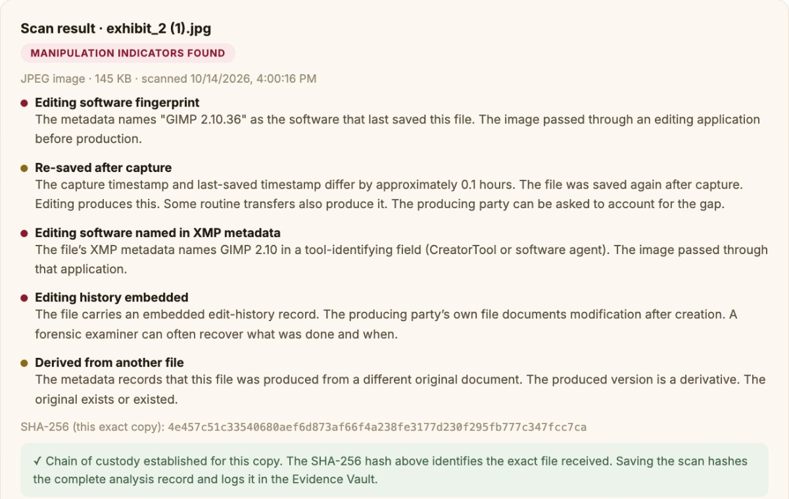
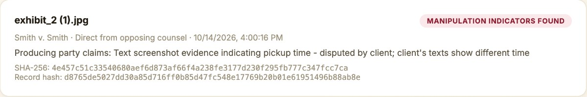
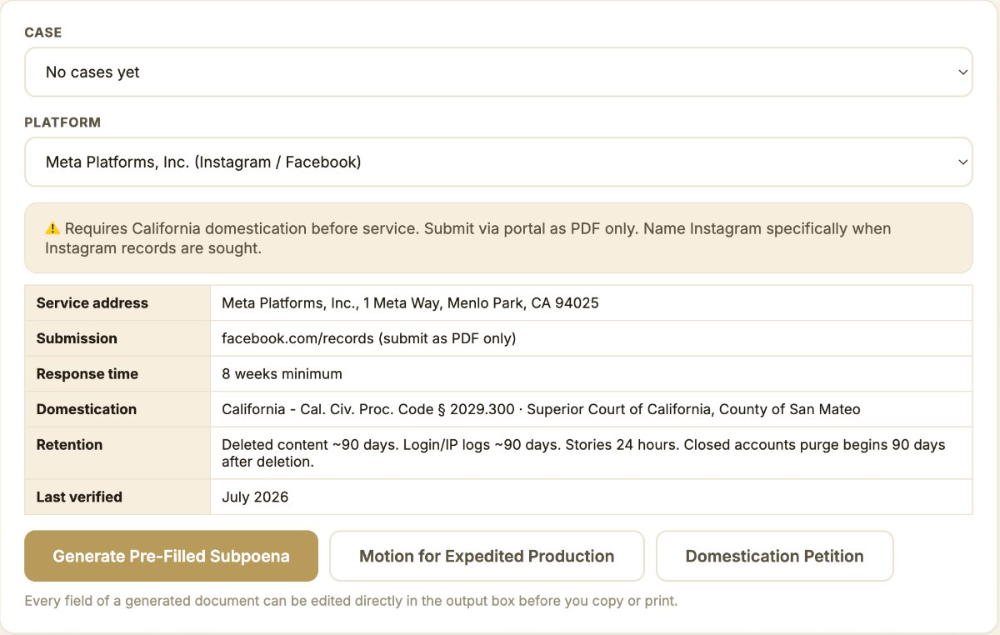

Opposing counsel has screenshots. Are they fabricated?
The evidence pipeline your firm has been improvising. Systematized.
Screen opposing evidence for fabrication before you walk into the courtroom. Send preservation letters before retention windows close. File subpoenas that get accepted the first time. Every file hashed, timestamped, and documented with chain of custody.
Plans start at $249/month, introductory pricing.

Screen•Preserve•Subpoena
Screen opposing evidence
Upload what the other side produced. The scanner reads what the file carries internally and flags signs it was altered, before you're in front of the judge.
Preserve before it's gone
Retention windows on deleted content run about 90 days on most platforms and 24 hours on Stories. Generate the preservation letter at intake, not in week six.
Subpoena without rejection
Pre-filled templates built to clear the reasons platforms reject subpoenas: wrong address, "any and all" language, missing domestication, wrong format.
Every tool your case needs, in one digital evidence suite.
Fabrication Detection
Files remember what was done to them. The scanner checks for metadata inconsistencies, timestamp anomalies, compression artifacts, editing software fingerprints, and font irregularities in documents.
Each scan produces a court-ready screening report: plain-language findings, severity flags, SHA-256 hash, and chain of custody documentation. Print and file.

Hashed Evidence Vault
The hashed log is what makes a finding hold up. Every entry carries a SHA-256 hash of the exact file received and a record hash covering the full analysis: how it was produced to you, what the producing party claims it shows, the findings, and the timestamps. Any alteration, of any size, changes the hash.
Preservation Letters & Subpoena Templates
The preservation letter generator pre-fills your case details, the platform's correct legal process address, and the specific items your scans flagged.
Expedited subpoena templates for Apple, Google, Microsoft, Meta, Intuit, carriers, and Amazon/Blink, with the Motion for Expedited Production, domestication petition, and Shield Law attestation included. Every field is editable before you copy or print.

Built to the authentication rules courts apply.
Reports and records are structured around the authentication requirements for electronic evidence in California and federal court.
Opposing evidence stays in your hands.
Every scan runs locally. The file is hashed at intake, and the analysis becomes part of that case's chain of custody, which runs per case from intake forward.
Plans start at $249/month.
Introductory pricing. Every plan includes the timestamped, hashed evidence log with full chain of custody.
Fabrication Detection
Scanner, court-ready screening reports, and the hashed evidence vault.
Detection + Templates
Everything in Tier 1, plus preservation letters and expedited subpoena templates.
The Whole Firm, Covered
Five attorney seats, shared case files and vault, priority onboarding, and direct escalation to APOM Investigations.
Platform + 1:1 Case Review
Everything in Tier 3, plus a monthly one-hour case review with Kyērstin O’Neal.
Escalate straight to APOM Investigations.
Some cases need signed forensic work: crypto asset tracing, subject investigations, device forensics. Bring the screening report and the hashes. The chain of custody your scans established carries directly into the investigation, quoted per case.
About APOM Investigations →Built by the investigator attorneys call when the evidence is digital.
APOM Research is not affiliated with, endorsed by, or representing any government entity.

Make the Invisible Visible
A Family Law Attorney's Field Guide to Digital Evidence and Technology-Facilitated Abuse.
Get it on Amazon →“I worried that law enforcement would dismiss me or minimize the danger because the abuse was happening online, across multiple platforms, and through a network that felt impossible to track or describe. Working with Kyērstin O’Neal changed that. She moved quickly and methodically, identifying the people involved and mapping out the broader network in a way that finally made the full picture clear. She created a comprehensive and factual package that allowed me to approach the FBI and law enforcement with confidence, knowing I would be heard.”
What attorneys ask first.
Walk in knowing what's been fabricated.
Join the waitlist to hear first when APOM Authenticate opens to firms.
Join the waitlist